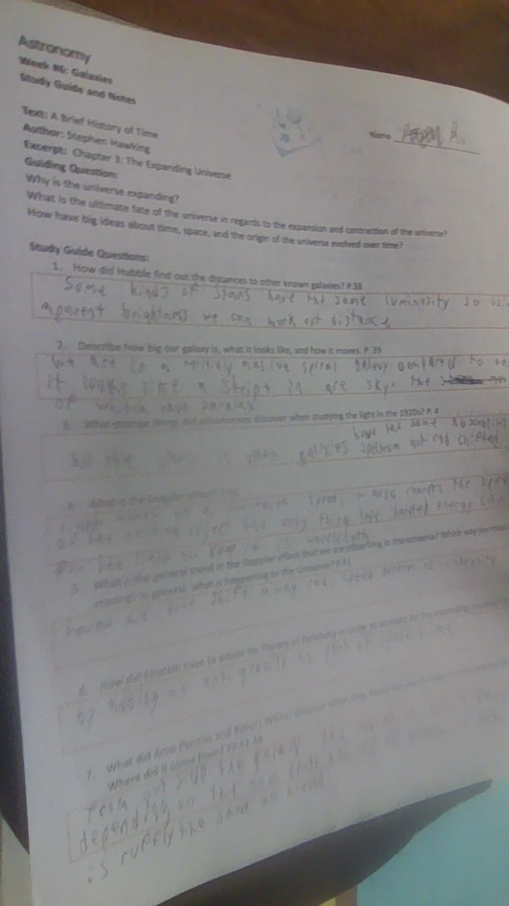

Solitude and Reflection
Link to work

The artifact on the right is a study guide for a reading in astronomy. These readings are done outside of class and then descused inclass later, giving time for both solitude and reflection. Above is a link to my finnal informational writing peace, wich was writen alone and then peer reviewed.
Solitude and reflection are importain to grow because you can't improve if you don't know what you are doing wrong and how to do it beter. Solitude is required for reflection because the best reflection happens alone without distractions.